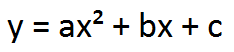
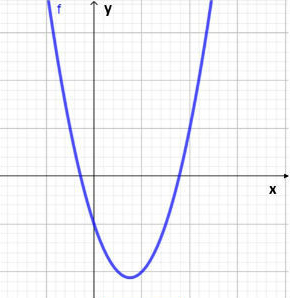
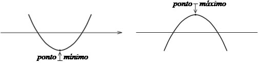
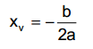
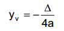

As funções de segundo grau possuem lei de formação como a seguinte:
Gráficos
Os gráficos de uma função de segundo grau é representado por uma parábula.
Ex:
Valor de a
Em uma função de segundo grau, o número que corresponde a letra a definirá se a concavidade da parábula estará voltada para cima ou para baixo, sendo que:
- Se a > 0, a concavidade estará voltada para cima;
- Se a = 0, não é uma função;
- Se a < 0, a concavidade estará voltada para baixo.
Valor de b
Em uma função de segundo grau, o número que corresponde a letra b definirá o lado da parábula que intercepta o eixo y, sendo que:
- Se b > 0, intercepta no ramo crescente;
- Se b = 0, intercepta no vértice;
- Se b < 0, intercepta no ramo decrescente.
Valor de c
Em uma função de segundo grau, o número que corresponde a letra c definirá onde a curva intercep o eixo y, sendo que:
- Se c > 0, intercepta na parte positiva;
- Se c = 0, intercepta na origem;
- Se c < 0, intercepta na parte negativa.
Raizes
Em uma função de segundo grau, o valor de Δ (delta) definirá quantas raizes reais a função terá, sendo que:
- Se Δ > 0, possui duas raizes reais distintas;
- Se Δ = 0, possui duas raizes reais iguais;
- Se Δ < 0, não possui raizes reais.
Vértice da Parábula
Em uma função de segundo grau, sua parábula pode ser dividida verticalmente por um eixo de simetria. Esse eixo intercepta um único ponto da parábula, esse receberá o nome de vértice.
Esse vértice também possui coordenadas (Xv,Yv) e representará o valor máximo (se a < 0) ou o valor mínimo (se a > 0).
Para encontrar suas coordenadas podemos usar as seguintes fórulas:
 